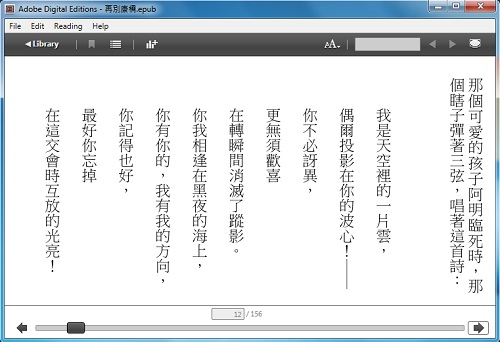
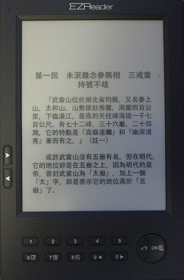
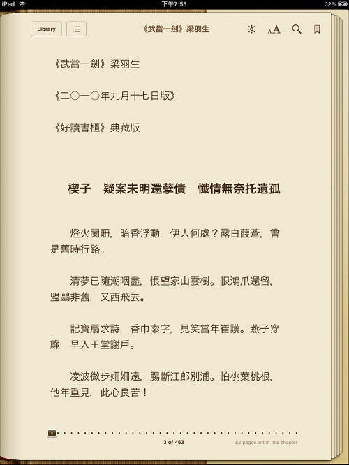
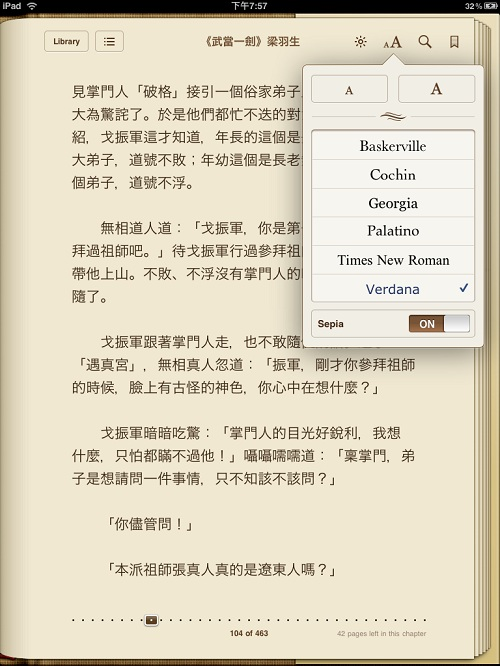
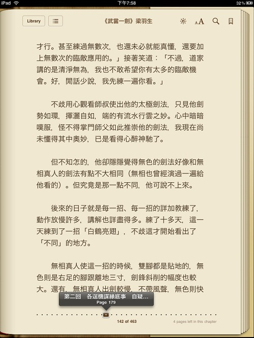
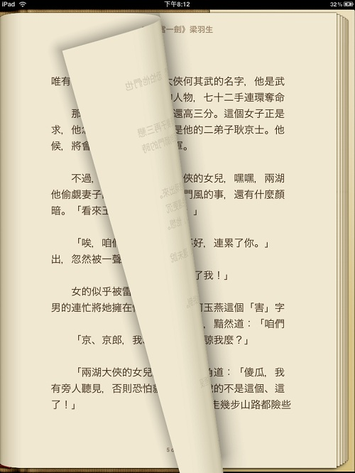

多看閱讀 - 閱讀電子書的手機 APP (Nelson) 您好，一直以來都是好讀的忠實用戶，特來分享一下我在手機以及平板上使用的閱讀 APP。它叫做「
多看閱讀」，有支援 Android / iPhone / iPad / Kindle，可以正常開啟直式跟橫式的 ePub 檔案。我用起來很舒服，發現好讀閱讀軟體裡頭沒有介紹到這款 APP，特來分享給各位書友。(2013/11/17)
好讀epub檔應該適用於所有可以開啟epub檔的閱讀軟體，但是：
- Nook Touch/Color/Tablet： 閱讀時，Text設定的Publishers Defaults要打勾才能正常閱讀。另外，2011/10/10之前提供的epub檔，無法正常顯示，在stylesheet.css中要加字型檔的設定。解決方法：請下載updb檔，用mPDB轉成epub檔就可以了。
- 綠林資訊的 Ezreader Touch：有讀友反應會當機，請試2012/2/21之後提供的epub檔，應該不會。之前的，請下載updb檔，用mPDB轉成epub檔。
好讀直式 epub 檔 周劍輝 2012/11/16
- Nook Tablet、iPad (要更新至iOS6，iBooks 3.01) 可直接下載直式閱讀。
-
Kindle Touch/Paperwhite可用Kindle Previewer或KindleGen轉成mobi檔直式閱讀。(轉成的mobi檔比好讀prc檔大很多，但目前尚不知要如何修改才能產生直式prc檔，希望有讀友能協助。)
好讀 epub 檔直讀 周劍輝 2012/9/25
支援epub 3.0規格的閱讀軟體，如
Adobe Digital Editions 2.0 (有Windows/Mac版)，可直式閱讀2012/9/25之後提供的好讀epub檔。之前的，請下載updb檔，用
mPDB轉成epub檔。(感謝M提供css的設定)

好讀 epub 檔 周劍輝 2010/9/17
在kindle fire上離線閱讀好讀書籍的方法 (Tina Hsiang) 周先生您好，在kindle fire上安裝iReader或Moon+ reader App就可以閱讀ePub檔。有些Apps並不能在kindle上正常運行，但這兩個我試過，是沒問題的。提供給您做參考。謝謝您長久以來無私的貢獻。Best Regards, Tina (2011/12/3)
epub (electronic publication) 是這兩三年才出現的新電子書規格，除了Kindle，新起的各家閱讀器都預設有支援軟體，不用另外安裝。什麼樣的規格能搏得各家同意，又能快速支援的？只有一種：網頁規格。
書要分章節，一個網頁行嗎？當然不行。所以epub實際上只能是一堆網頁，一章一個網頁。但一堆網頁檔怎麼能變成一個檔？簡單，壓縮。不信？將epub改為zip，就可解出其中所有的檔案來看。
前兩三個月陸續有讀友來信詢問與epub有關的問題。原本我也不知道什麼是epub，七月完成了mPDB的Unicode化，上網查了一下，也下載了幾個樣本解開來看。結論是由mPDB轉出epub檔，應該是舉手之勞。但忙著改好讀PC 1.8版及其他的事，又無機子可測，就想年底再說吧。
2009年台灣電子書市場炒作的火熱，不時有人問我怎麼看？我說假的，玩不了多久的。我怎麼能這麼武斷？因為陸續有幾家知名的閱讀器廠商找過我，希望與好讀網站合作。
怎麼合作？原先我還頗熱忱，但談多了，我終於恍然大悟，原來他們在乎的只是如何短打上市、炒作股票、建書城賣書，或如何合作向政府挖錢貼補，沒有一家真的在乎電子書的長期發展。
要我推薦，但我怎麼可能會推薦不能跑好讀的閱讀器，要我提供軟體，我說請寄機子來。但我手頭上一直無機子可測，您就了解結果是沒結果了。也一直沒有讀友來問這些機子是否能看好讀，您就可結論沒幾個人買這些閱讀器。
台灣的閱讀器市場因Kindle而炒熱，但當Kindle降至$139，未來甚至$99或免費，還會有市場嗎？再加上iPad引來的平板電腦波，要怎麼玩？小鼻子小眼睛的結局就只有為國外知名廠商代工一途。
2010/9/14 終於收到一臺ePaper閱讀器，六吋的EZ Reader，是美國聖荷西市的ASTAK寄來的。上網找了一本英文的epub書來看，效果還頂不錯。再找中文的epub書，只找到簡體的，正體的一時沒找到，有些悶氣。於是擠出一點時間開始改mPDB，增加一個轉出epub檔的功能。
2010/9/17 放上的
梁羽生【武當一劍】加上了epub檔，是好讀網站提供的第一個epub檔，95%的mPDB，5%的手工。在此我也要特別感謝讀友嘉明，我做夢也無法想到好讀網站能收集到完整的梁羽生作品，多謝嘉明的辛勞。另外還要特別一提的是：嘉明所製作的書，網頁上的一書提要，都是嘉明親筆撰寫的。

右側是EZ Reader上的閱讀畫面，供大家參考。
有關EZReader產品資料請至
www.theEZReader.com。
若您的機子能讀epub檔，請協助測試武當一劍是否能正常、舒適閱讀。目前我只知道一個問題，就是目錄 (Catalog) 會亂碼。都確定之後，我可完成mPDB的自動轉檔，方便各讀友自行製epub格式的中文、或英文電子書 (epub是橫式閱讀)。好讀網站的書也會逐步提供epub檔。
ASTAK成立於1992年, 位於美國加利福尼亞州聖荷西市，著重於消費型電子產品以及安全監控產品。為全美第一家推出電子書閱讀器的華人業者。EZReader是全美第一台支援最多文檔圖片格式的電子書閱讀器，及全美第一台有中文語音朗讀功能的閱讀器。
2010/9/22 (周劍輝) 謝謝諸讀友的協助測試，已確定好讀epub檔的規格沒問題。mPDB的轉出epub檔的功能也已完成，我也另外再加上了一個轉出txt檔的功能。還要再改些東西，預計十月底，放上mPDB 2.6版。
ONYX (May) 已經可以在我的ebook reader (ONYX) 下載及閱讀 '梁羽生' 的 '武當一劍'，很高興。字體放大，縮小均沒有問題。但下載時沒有 '書名'，只有file number，需要自己下載後修改。看了第一節，沒有甚麼問題。美中不足的是： '橫' 看武俠小說，有點不習慣！但沒有關係，這個習慣可以改，非常感謝您的努力。(2010/9/20)
葉綠書 (Erik Lee) 下載了epub檔到「葉綠書」（greenbook）電子閱讀器，測試後一切正常，目錄與正文閱讀都沒有任何問題。之前都是將好讀網站上自己想看的書，自行轉檔後，放到葉綠書上閱讀，並不會很麻煩，但如果有epub格式，應該會更方便，除了像葉綠書或nook，可以無須轉檔便直接閱讀的便利外，因已有軟體能迅速將epub轉成Kindle的mobi檔，這樣子有Kindle的讀者，也能方便享受「好讀」優質的電子書。
葉綠書我自己用感覺還不錯，反應速度頗快，英文電子書閱讀上也很舒服。中文方面，因無法更改字距行距，加上預設的行距有點太擠，每行裡頭，各字的字距又常常寬窄不均，因此讀起來有時候會有點火大。中文排版，葉綠書確實比不上Kindle或iPad的中文呈現。
最後要感謝您如此細心經營這個網站，讓想靜靜讀些優質電子書的人，仍然對電子書的未來抱持著希望。(2010/9/20)
台電科技K6 (victor) 我用台電K6，測試好讀epub，目錄跟內容都完全正常可閱讀。 (2010/9/19)
Nook (顏士傑) 剛剛下載了武當一劍，發現在nook都是全？？？？(但是看pdf檔沒這問題)
查了一下資料，原來在nook看ePub中文檔，得先破解+替換字庫，
沒想到一更新，現在一直停留在更新的畫頁，已經三個多小時了，
希望這台nook不要變成磚塊。
(2010/9/18)
nook 不破解一樣可以完整閱讀中文電子書 (SiliconBug) 在nook看ePub中文檔，得先破解+替換字庫」是完全錯誤的新手猜測，因為 nook 本身就已內建 DroidSansFallback.ttf 中文字型，只要在 epub 裡加一段指定使用 nook 內建的 DroidSansFallback.ttf 字體的 CSS 就能顯示中文，與破不破解根本無關。
(2010/9/20)
金庸機 (印第安) 因為喜歡金庸的作品，所以買了遠流的金庸機來典藏，在google搜尋後，找到了好讀網站，真的是挖到寶了，最近就把站上的一些電子書用eCub這個免費的軟體轉成ePub格式來看，剛剛下載了梁羽生的武當一劍來看，經測試完全沒問題，目錄也沒有亂碼的現象，很感謝您以及大家的分享！ (2010/9/18)
iPad (Yao-Cheng Li) The ePub file looked perfect in my iPad. The font size is adjustable and one can quickly move to wanted page through the "page navigator" on the bottom of the page. In addition, the "page flipping" effect worked nicely. All in all, it makes reading a Chinese novel so enjoyable. Finally, I would like to thank you for your efforts to create and maintain this excellent Chinese library. (2010/9/17)




Firefox (AK) 謝謝你提供梁羽生【武當一劍】的epub版，我用firefox 插件epubreader，完全正常顯示包括章節。 (2010/9/17)